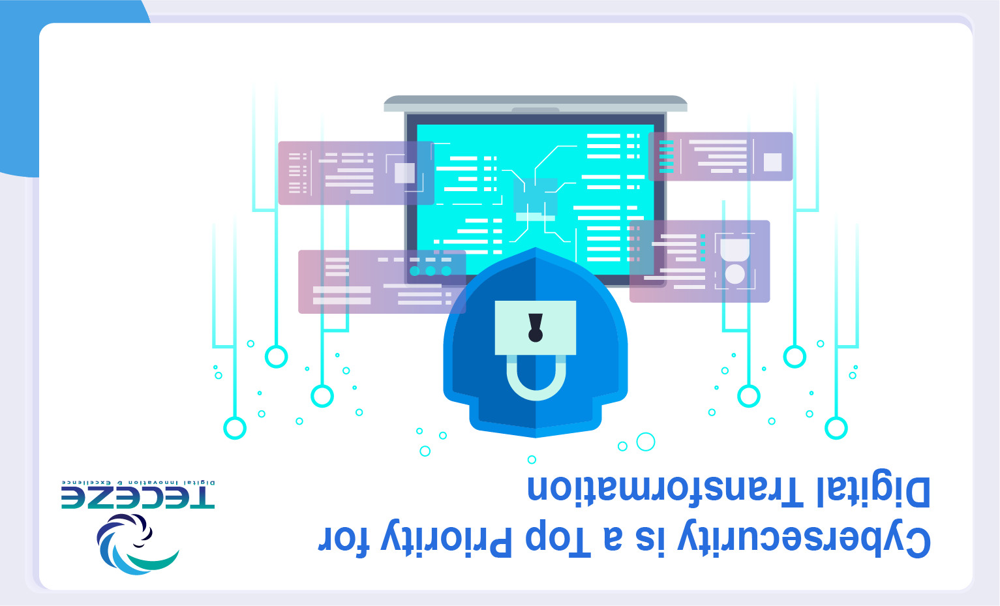
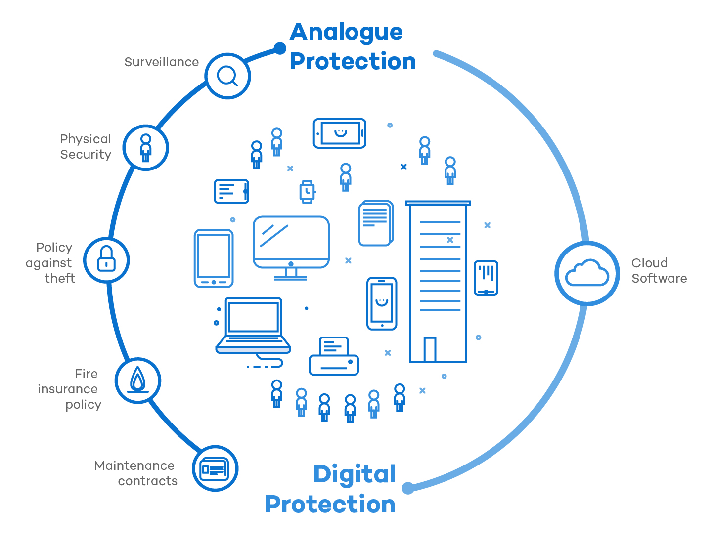
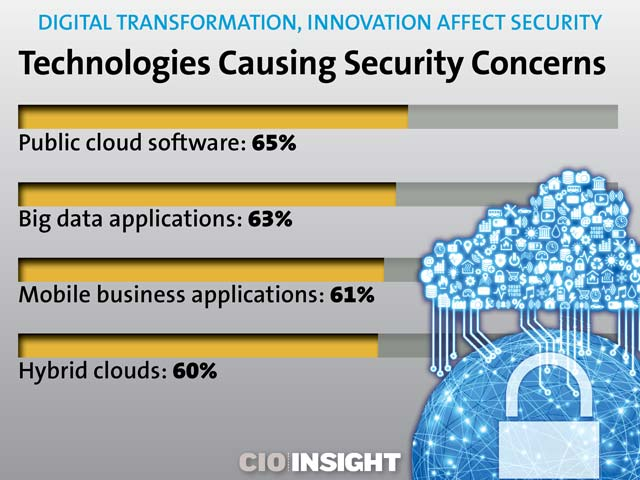

.png)
FLEXIBLE SECURITY FOR EVOLVING CLOUD
Conquer any security challenge
Achieve better security outcomes
Simplify the infrastructure
The average enterprise runs 45 cybersecurity-related tools on its network.1 With more tools comes more complexity,
and complexity creates security gaps. Zero Trust creates an opportunity to rebuild security in a way that meets digital
transformatiBecause of COVID-19, organizations are adjusting to a rise in remote work and the key driver of
digital transformation activities has been cybersecurity. Not only is cybersecurity the motive for digital transformation,
but the benefits of the cloud, data processing, and more innovative network technology are also made clear. Among
the major challenges for IT leaders is the need to adapt to the digital culture, automate business processes, and choose
the right cloud strategy.
Cybersecurity: Main Priority for Projects Planned
IT leaders have announced that the number one obstacle they need to address in the next 12 months is the rapid transition
of a society to new ways of working. After a survey of 600+ attendees for the upcoming DTX: NOW gathering, the results are
unveiled.
Cybersecurity was cited as the key priority for scheduled projects by 26 percent of respondents, followed by cloud (21 percent),
data analytics (15 percent), and network infrastructure (14 percent). There were more hands-on-keyboard intrusions in the first
half of 2020 than in the entirety of 2019, according to a separate study.

IT leaders reported that the biggest obstacle they need to address in the next year was to adapt the digital culture
to a modern world of work (18 percent), followed by automating company activities and processes (14 percent) and
selecting the right cloud strategy (12 percent).
Configuring Cybersecurity in a Business Environment
Most service owners and consumers are automated, but they need assistance to understand where the irregularities are, what
and where the risks are, and how to cope quickly with any downtime. There's help from the IT department here.
It is possible to create a perfect balance between supporting versatile, fast services, and the need to prevent threats from
bringing down service lines. To do this effectively, however, it needs to abandon its traditional position and accept that others
will need training in digital security.
The Most Important Barriers to Projects for Digital Transformation
The biggest challenges to the timely and budgetary implementation of digital transformation initiatives represent changing
organizational dynamics that are being amplified by COVID-19. Changing reach (29 percent of respondents), decreased budgets
(24 percent), and changing team composition (17 percent) were the most important obstacles to projects.
The information also shows that for organizations of all sizes, Digital Transformation has become a priority. It is expected that
58% of projects will come in at less than £250,000, and just 22% have a budget of more than £ 500,000 and 10% over £1 million.
Within Your Organisation – What Does This Mean for Cybersecurity?
The protection mechanisms that protect services need to become more adaptable when a business is truly digitally activated and
extends beyond the traditional IT limit. From the very beginning, intelligence-led security standards should be applied in all digital
operations. Viewpoints need to shift, because the role of one person or department may not be protected. Business leaders fail to
clarify what the future digitized state of their businesses will be and how their business models will evolve in the future in order
to work properly.

To do this sort of tactical digital preparation, the organization will start placing the right pieces in place. Typically, this preparation
entails choices such as designing and modifying certain cloud applications; upgrading IT on-site to make it more cloud-like;
advancing supply chains to be more automated, and adapting to be more technologically normal and responsive to the corporate
culture. Instantly and strategically, Digital Transformation needs to concentrate on cybersecurity.
If the company is focused on digital technologies; if digital communication affects the customer experience; if employee efficiency is
due to pervasive access to apps and data, then cybersecurity must be integrated into all areas of the company. Only when you
approach digital transformation from that point of view and communicate the strategic priorities to the leaders in cybersecurity
will you identify how much cybersecurity risk the organization is prepared to deal with?
You need to make sure your cybersecurity is consistent with your business priorities for digital transformation. Each business
becomes a data company because the data is not in one central place, protection is required everywhere to ensure the information
is accessible, and no third-party damages the company.
Cybersecurity insurance is another critical concern in reducing risk. With the aid of digital transformation, companies are steadily
investing in cyber insurance. But just providing insurance is not a guarantee that the company is a risk that changes enough.
Therefore, business leaders need to study cybersecurity insurance in greater depth.
Because of COVID-19, organizations are adjusting to a rise in remote work and the key driver of digital transformation activities
has been cybersecurity. on goals while reducing risk and overall complexity.
| MORE ABOUT US | REGISTRATION FORM | SECURE FINANCE AND BANKING | HUMAN CENTRIC CYBER SECURITY | HOME PAGE |